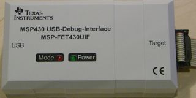
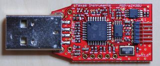
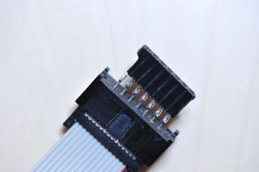
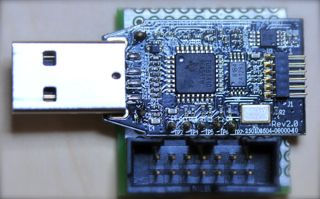
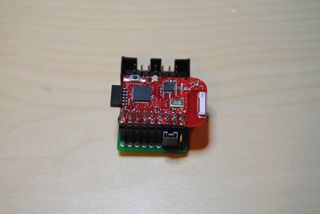

Debug Firmware for MSP-FET430UIF/eZ430U
|  |  |
D/FWは MSP-FET430UIF, eZ430U 用の非公式ファームウェア(DFW)と それに付随するホストプログラム群です。 動作確認は MacOSX で行っていますが、他の UNIX (Linux とか BSD) でも使える筈です。 自習の為にホビーとして作っています。
D/FW には 2 種類のファームウェアが含まれます。
| FET | Device | TAP | Target Board | Comments(test by) |
|---|---|---|---|---|
| FETUIF | F169 | JTAG | MSP-TS430PM64 | |
| FETUIF | F2274 | JTAG | MSP-TS430DA38 | |
| FETUIF | F2274 | SBW | MSP-TS430DA38 | |
| FETUIF | F2274 | SBW | eZ430-RF2500T | |
| FETUIF | F1612 | JTAG | eZ430U(Rev2.0) | Soldered TP7..TP1 |
| FETUIF | F2618 | CPUXV1/JTAG | MSP-TS430PM64 | |
| FETUIF | F5529 | CPUXV2/JTAG | MSP-TS430PN80USB | |
| FETUIF | F5529 | CPUXV2/SBW | MSP-TS430PN80USB | |
| FETUIF | F6137 | CPUXV2/SBW | eZ430-Chronos | |
| eZ430U | F2012 | SBW | eZ430-T2012 | |
| eZ430U | F2274 | SBW | eZ430-RF2500T | |
| eZ430U | F6137 | CPUXV2/SBW | eZ430-Chronos | |
| F2274 | F1612 | JTAG | eZ430U(Rev2.0) | F2274@R2500T |
| F2274 | F2274 | SBW | eZ430-RF2500T | F2274@R2500T |
| FETUIF | CC2511 | CC8051 | CC2511DK_Dongle | Chipcon RF |
|  |
FET430UIF 用の JTAG コネクタ。 FET430UIF の Rev1.3の基板だとグランドとショートしてしまうので VCCT(J6 の7ピン)はつなげてません。 |
|  |
|  | JTAG のコネクタと SBW に対応させる為のジャンパを取り付けます。 つなげ方はdfw/conf/f2274/uif_f2274.cを参照してください。 Bootstrapping D/FW on eZ430-RF2500 の Step5 も参照。 |
ターゲットCPUへのプログラムの書き込みには dmwt を使います。
Usage: dmwt [-vdf] [-p /dev/cu.usbmodemXXX] [-c TARGET_OPTIONS]
[-b name.txt from-addr] [object]
``object'' は ELF か Intel HEX か TITXT 形式。
使用している OS によっては /dev/cu.usbmodemXXX は
/dev/ttyACMXXX や /dev/ttyXXX になる場合もあります。
$ dmwt # ヘルプメッセージを表示
$ dmwt -f dfw.fetuif.elf # ファームウェアアップデート
$ dmwt -c TARGET_OPTIONS a.out
$ dmwt -p /dev/cu.usbmodem001 -c "SBW" a.out
$ dmwt -vc "SBW" a.out # うるさいモード
$ dmwt -c "" a.out # デフォルトは JTAG
$ dmwt -c "SBW" a.out # SBW で書き込む時はこうします。
$ dmwt -c "VCC 3000 UNLOCKA" a.out # 2xx ではINFO_Aのプロテクトを外します。
$ dmwt -c "CPUXV1" a.out
$ dmwt -c "CPUXV2" a.out
$ dmwt -c "CC8051" main.hex
その他 examples/*/Makefile にいろいろあります。
$ msp430-gdbproxy --help uifdfw $ msp430-gdbproxy --port=2000 uifdfw --c TARGET_OPTIONS $ msp430-gdbproxy --port=2000 uifdfw --c "CPUXV2" --debug $ msp430-gdbproxy --port=2000 uifdfw --c "SBW" # msp430/SBW $ msp430-gdbproxy --port=2000 uifdfw --c "CPUXV1" # CPUXV1/JTAG $ msp430-gdbproxy --port=2000 uifdfw --c "CPUXV2 SBW" # CPUXV2/SBW.gdbinit はこんな感じです。
set remoteaddresssize 64 set remotetimeout 999999 target remote localhost:2000 define reload monitor erase monitor flash load monitor memory set $pc = *0xfffe end
MSP430 : (default) msp430x1xx, msp430x2xx, msp430x4xx CPUXV1 : msp430x2xx, msp430x4xx with CPUX CPUXV2 : msp430x5xx, cc430x6xx CC8051 : cc111x, cc251x, etc. VCC xxxx : sets VCC to XXXX mV (e.g., VCC 3300), FET430UIF only. JTAG : (default) SBW : FastFlash : (default) SlowFlash : FastFlash の機能もたない比較的古い CPU で必要になります。 LOCKA : (default) INFO_A をプロテクト UNLOCKA : INFO_A のプロテクトを外します。 FCTL addr : CPUXv2 において FCTL のベースアドレスを指定します FWS n : CC8051 において flash のワードサイズを指定します。
Usage: bufet [-vd] [-p /dev/cu.usbmodemXXX] [-c TARGET_OPTIONS]
[fet_eeprom.txt fet_flash.txt]
バックアップファイルを作るには、
$ ./bufetもしくは
$ mkdir FET_backup $ cd FET_backup $ ../bufetとするとカレントディレクトリに fet_eeprom.txt と fet_flash.txt という TITXT 形式の二つのファイルが作成されます。 双方とも後半はほとんどデータが 0xFF なのでD/FW パッケージ付属の titxt_compress コマンドを使って 0xFF の塊を取り除いておくと リストアするときの時間が節約出来ます。
リストアするには
$ ../bufet fet_eeprom.txt fet_flash.txtと入力します。特に EEPROM への書き込みはとてもおそいので気長に待っててください。
$ ./configure --prefix=/usr/local/msp430 --target=msp430 --disable-nls
i686-apple-darwin10.2.0)
;;
*)
echo "Configuration $machine not supported" 1>&2
exit 1
;;